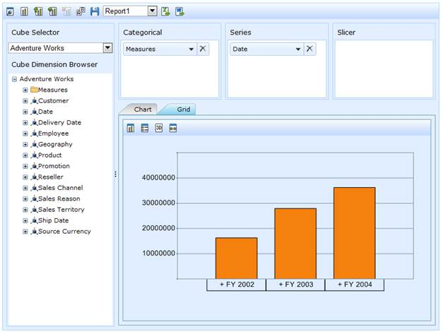
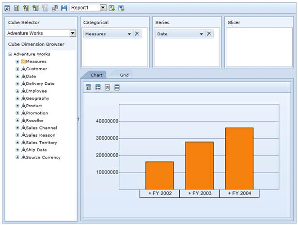
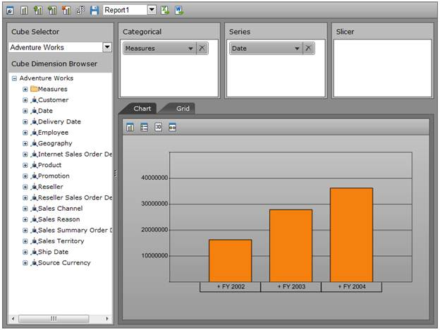
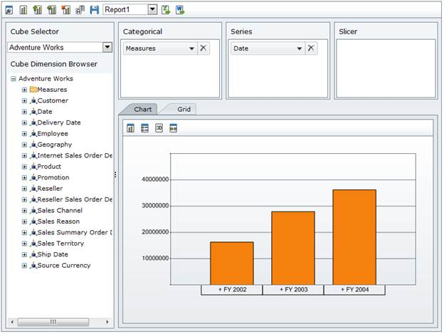

OLAP Client control provides the following theme support.
· Classic
· Office2010Blue
· Office2010Black
· Office2010Silver
· Custom CSS
This can be achieved by setting the “Autoformat” property.
|
[C#] this.OlapClient1.Autoformat = Autoformat.Office2010Blue; |
|
[VB] Me.OlapClient1.Autoformat = Autoformat.Office2010Blue |

Figure 50: "Classic" skin

Figure 51: "Office2010" Blue

Figure 52: "Office2010Black" skin

Figure 53: "Office2010Silver" skin
Table 22: Autoformat Property
|
Property |
Description |
Type |
Data type |
Reference link |
|
Autoformat |
Provided theme support such as classic, Office2010Blue, Office2010Black and Office2010Silver. |
Server side |
enum |
- |
Sample Link
A sample demo is available at the following link:
..\Syncfusion\EssentialStudio\<Version Number>\BI\Web\OlapClient.Web\Samples\3.5\OlapClient\ OlapClientDemo